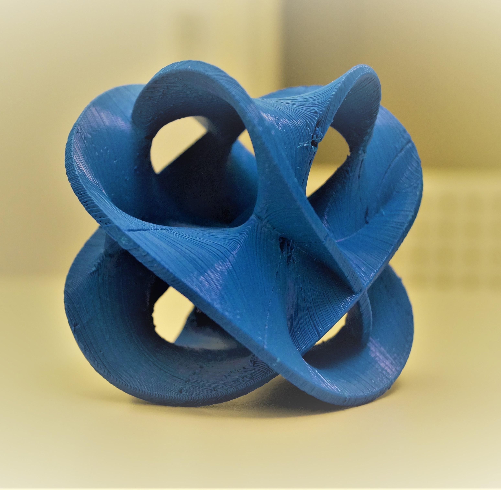
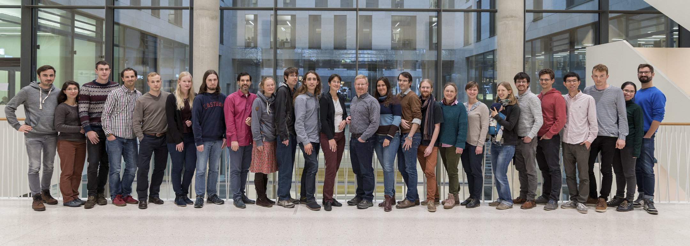

About
The team
The creation of HEGL is the initiative of Prof. Dr. Anna Wienhard, who is the director of the Research Station: Geometry & Dynamics at Heidelberg University and of the Groups and Geometry research group at HITS (Heidelberg Institute of Theoretical Studies).
The new Lab Manager (since September 2021) is Dr. Diaaeldin Taha.
Other members of the Research Station have been active in the creation of the Lab, including: Brice Loustau, Anja Randecker, Nguyen-Thi Dang, Menelaos Zikidis, Valentina Disarlo.
Below is a picture of the Research Station members in 2019:

Links
Institutional links:
- Research Station Geometry & Dynamics.
- Mathematics Institute at Heidelberg University.
- Groups and Geometry at HITS (Heidelberg Institute of Theoretical Studies).
- Geometry Labs United. The GLU website lists all geometry labs that are part of GLU.
- AMS article by the founders of GLU.
- ICERM: The Institute for Computational and Experimental Research in Mathematics.
Other cool links:
- Henry Segerman's website on visualizing mathematics with 3D printing and his Youtube channel.
- Jos Ley's website contains a lot of great mathematical imagery, as well as videos and other material.
- Martin Demaine's website shows great glass art productions of mathematical objects.
- Keenan Crane's website and Youtube channel have a lot of educational content related to discrete differential geometry and visualization.
Contact
E-mail: hegl@mathi.uni-heidelberg.de
(You can also try dtaha@mathi.uni-heidelberg.de or randecker@mathi.uni-heidelberg.de.)
Physical address:
MATHEMATIKON
Im Neuenheimer Feld 205
69120 Heidelberg